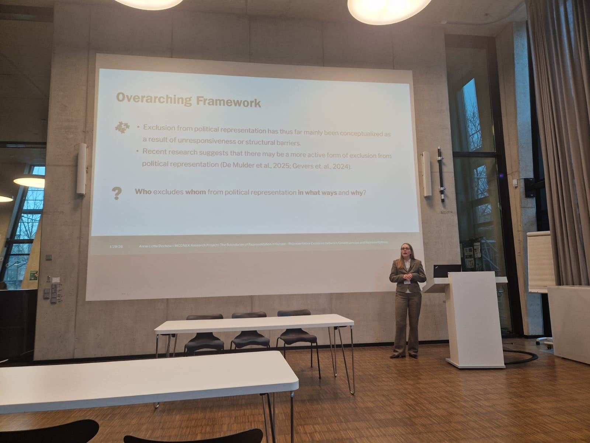
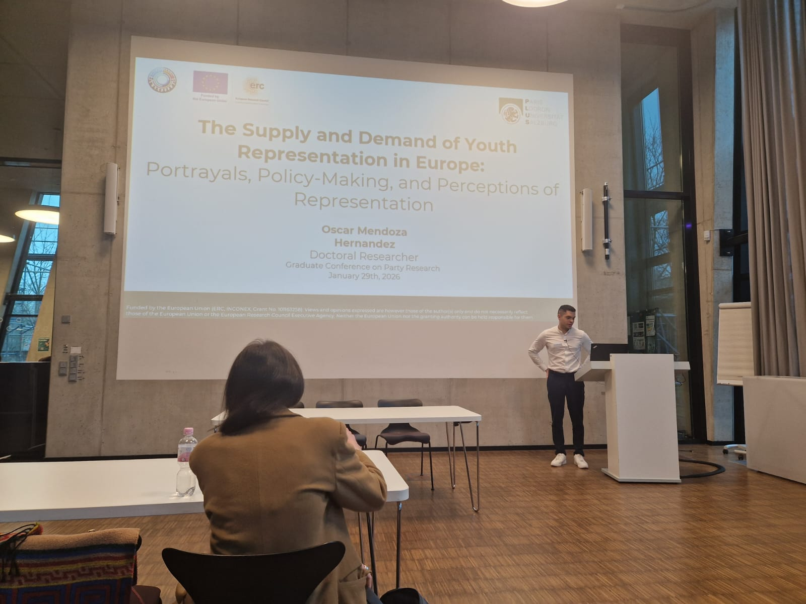
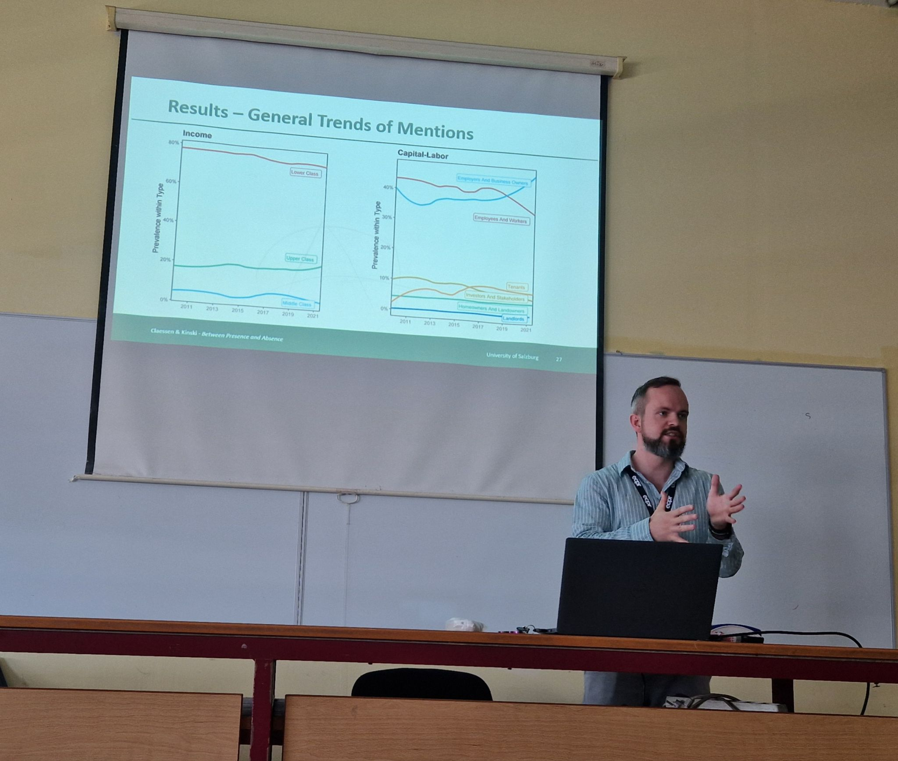

GraPa Conference · Düsseldorf · 29–30 January
Graduate Conference on Party Research
Hosted by the Düsseldorf Party Research Institute (PRuF), Anna-Lotta Dechow and Oscar Mendoza
Hernandez presented early drafts of their cumulative PhD projects — “The Boundaries of Representation
in Europe” and “The Supply and Demand of Youth Representation in Europe”. Lucy Kinski chaired the
panel “Populism and Party Conflict”. Special thanks to Peter Obert for serving as discussant, and to
the PRuF for the excellent organization.


Political Science Colloquium · Innsbruck · 27 February
Present but not Represented?
At the political science colloquium in Innsbruck, Clint Claessen presented preliminary results from
the project in a paper titled “Present but not Represented? Representative Claims and Group Appeals in
Parliamentary Debates.” Special thanks to Fabian Habersack for organizing the talk and to the
political science team for their comments.
PSAI Annual Conference 2025 · Galway
Between presence and absence
At the Political Studies Association of Ireland (PSAI) Annual Conference 2025, Clint Claessen
presented the first project paper, “Between presence and absence: Social classes and vulnerable
groups in parliamentary debates,” in a panel organized by Alona O. Dolinsky. Thanks to her and her
co-authors Will Horne and Lena Huber for their comments and for sharing their modelling strategies.
ECPR General Conference 2025 · Thessaloniki
Conceptualizing representative absence
Lucy Kinski and Clint Claessen presented two papers from INCONEX. The first, “Conceptualizing
representative absence: What, how, when, and why?”, argues that representative absence is not just the
opposite of presence — part of a panel on presence and absence chaired by Lucy Kinski, alongside
papers by Alex Magas and Clementina Gentile Fusillo. The second, “Between presence and absence:
Social classes and vulnerable groups in parliamentary debates”, was presented in a panel organized by
Stefanie Walter. Special thanks to Hajo G. Boomgaarden for the discussion.
